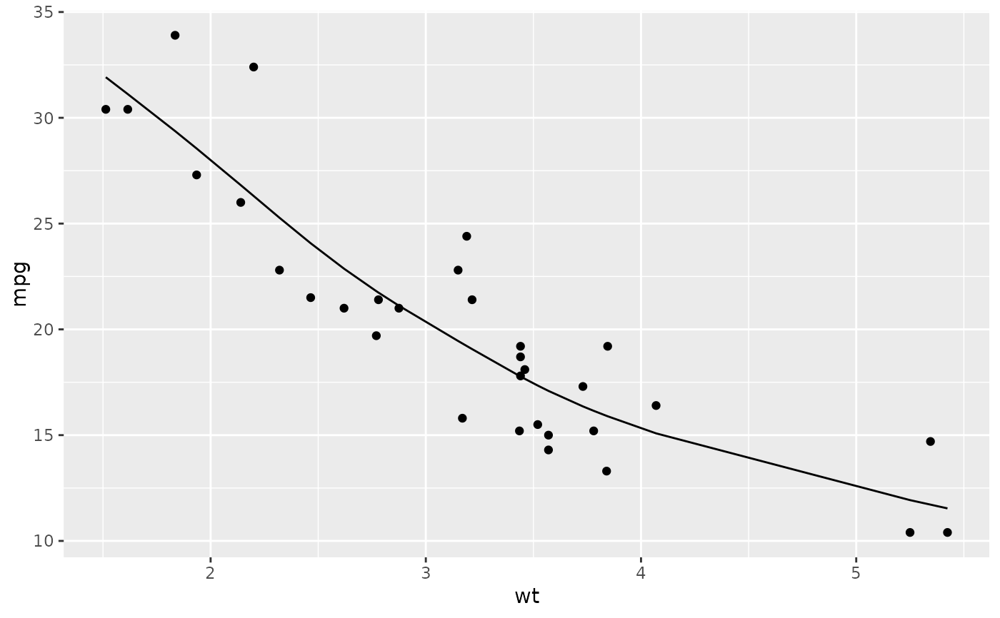

Tidy summarizes information about the components of a model. A model component might be a single term in a regression, a single hypothesis, a cluster, or a class. Exactly what tidy considers to be a model component varies across models but is usually self-evident. If a model has several distinct types of components, you will need to specify which components to return.
Usage
# S3 method for smooth.spline
glance(x, ...)Arguments
- x
A
smooth.splineobject returned fromstats::smooth.spline().- ...
Additional arguments. Not used. Needed to match generic signature only. Cautionary note: Misspelled arguments will be absorbed in
..., where they will be ignored. If the misspelled argument has a default value, the default value will be used. For example, if you passconf.lvel = 0.9, all computation will proceed usingconf.level = 0.95. Two exceptions here are:
See also
augment(), stats::smooth.spline()
Other smoothing spline tidiers:
augment.smooth.spline()
Value
A tibble::tibble() with exactly one row and columns:
- crit
Minimized criterion
- cv.crit
Cross-validation score
- df
Degrees of freedom used by the model.
- lambda
Choice of lambda corresponding to `spar`.
- nobs
Number of observations used.
- pen.crit
Penalized criterion.
- spar
Smoothing parameter.
Examples
# fit model
spl <- smooth.spline(mtcars$wt, mtcars$mpg, df = 4)
# summarize model fit with tidiers
augment(spl, mtcars)
#> # A tibble: 32 × 13
#> mpg cyl disp hp drat wt qsec vs am gear carb
#> <dbl> <dbl> <dbl> <dbl> <dbl> <dbl> <dbl> <dbl> <dbl> <dbl> <dbl>
#> 1 21 6 160 110 3.9 2.62 16.5 0 1 4 4
#> 2 21 6 160 110 3.9 2.88 17.0 0 1 4 4
#> 3 22.8 4 108 93 3.85 2.32 18.6 1 1 4 1
#> 4 21.4 6 258 110 3.08 3.22 19.4 1 0 3 1
#> 5 18.7 8 360 175 3.15 3.44 17.0 0 0 3 2
#> 6 18.1 6 225 105 2.76 3.46 20.2 1 0 3 1
#> 7 14.3 8 360 245 3.21 3.57 15.8 0 0 3 4
#> 8 24.4 4 147. 62 3.69 3.19 20 1 0 4 2
#> 9 22.8 4 141. 95 3.92 3.15 22.9 1 0 4 2
#> 10 19.2 6 168. 123 3.92 3.44 18.3 1 0 4 4
#> # … with 22 more rows, and 2 more variables: .fitted <dbl>, .resid <dbl>
# calls original columns x and y
augment(spl)
#> # A tibble: 32 × 5
#> x y w .fitted .resid
#> <dbl> <dbl> <dbl> <dbl> <dbl>
#> 1 2.62 21 1 22.9 -1.87
#> 2 2.88 21 1 21.1 -0.117
#> 3 2.32 22.8 1 25.3 -2.48
#> 4 3.22 21.4 1 19.1 2.33
#> 5 3.44 18.7 1 17.8 0.928
#> 6 3.46 18.1 1 17.7 0.437
#> 7 3.57 14.3 1 17.1 -2.79
#> 8 3.19 24.4 1 19.2 5.19
#> 9 3.15 22.8 1 19.5 3.35
#> 10 3.44 19.2 1 17.8 1.43
#> # … with 22 more rows
library(ggplot2)
ggplot(augment(spl, mtcars), aes(wt, mpg)) +
geom_point() +
geom_line(aes(y = .fitted))
